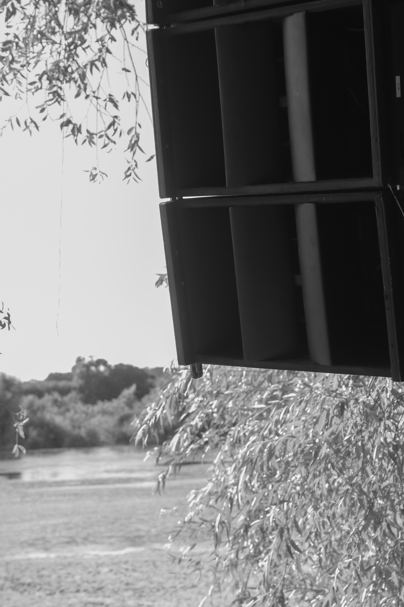
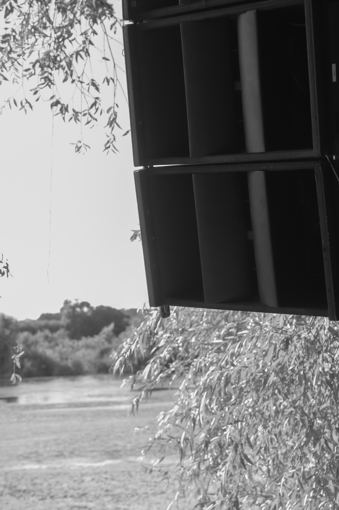

For the debut of our UK/EU-based Nova Acoustics line array we co-organised a free party on the lush shores of the river Tagus - not far from Lisbon, Portugal. We couldn't have been happier with the sound quality and overall one of the best parties *a party's* team has had the privilege of attending, let alone being part of.
The dancefloor had a dense, club-like yet very clear sound which subtly tapered to a pleasantly ambient yet crystal-clear and balanced sound on the sandy floodbanks. The line array mains and sub array exhibited excellent dispersion control from their line length and hornloading techniques - this resulted in even tonality and levels on the dancefloor and very little noise bleed in undesired areas, critical for an event requiring this level of discretion.
The absurd headroom of our 24 channels of amps and DSP, with combined 102,960W of power resulted in extremely clean, distortion-free sound. Nova's attention to phase coherence in their top design is seen in very few line arrays, resulting in exceptional transient response and clarity.
TL;DR - It Sounds Tight As Fuck.